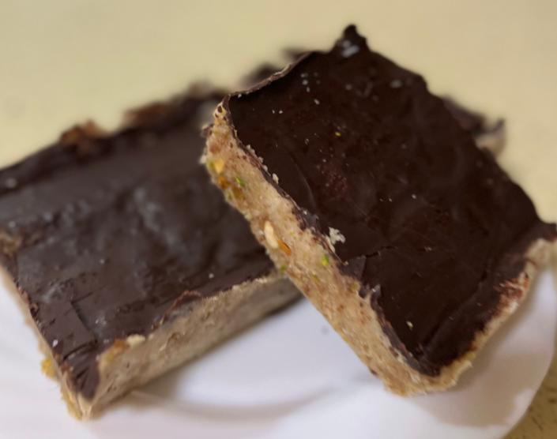

Receta Glucovibes
Turrón en Navidad. Sin el bajón.
Almendra, pistacho, dátiles y chocolate 82%. Sin azúcar añadido.
Desliza →
Hacemos visible lo invisible
Almendra, pistacho, dátiles y chocolate 82%. Sin azúcar añadido.
Desliza →

Receta del blog de Glucovibes.
| Ingrediente | Cantidad |
|---|---|
| Almendra molida | 200 g |
| Dátiles sin hueso | 120 g |
| Skyr (o yogur griego) | 145 g |
| Chocolate 82% o más | 55 g |
| Aceite de coco | 30 g |
| Almendra cruda + pistacho | 25 g + 25 g |
Los dátiles también llevan azúcar: disfrútalo en porciones.
glucovibes.com